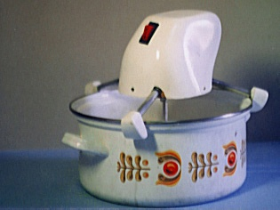
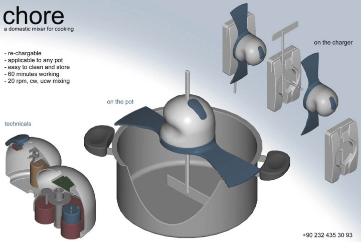
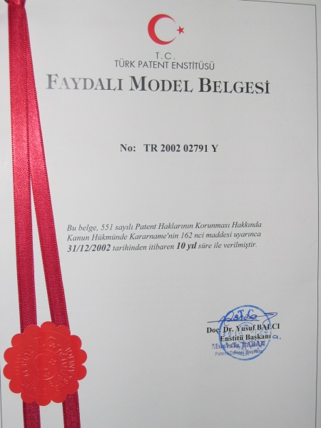
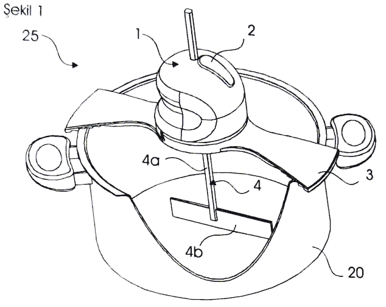
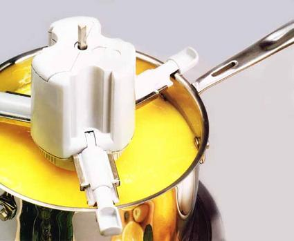
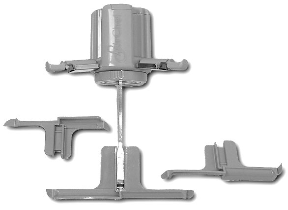

|
Arif Özver Ergin
B.Sc. Makine Müh.
M.Sc. Endüstriyel Tasarým
Eylül 2007, Güzelyalý / Ýstanbul
Bireyler genelde ihtiyaçlarýný giderebilmek ya da problemlerine çözüm bulmak için bir þeyleri icat ederler. Ancak bireyin buluþuna ticari bir boyut kazandýrabilmesi çok zordur ve birey ve özellikle bir genç bu konuda yalnýz hareket ettiði sürece çaresizdir.
Örneðin, düzensiz besleniyorsunuz, aþýrý stresiniz var ve üstüne üstlük birde aç karna asprin içtiniz. Etrafý her renginde kana boyarsýnýz, doktora gidip bir kaç ilaç alýrsýnýz ve sonrasýnda üç beþ ay çorba, muhallebi patates haþlama ile beslenirsiniz. Sonunda mideniz düzelir. Diyelim ki muhallebi çorba yaparken canýnýz sýkýlýp, bunlarý karýþtýran bir alet yapmaya kalktýnýz. Bu sefer bir bir yeriniz daha incinir ve daha zor iyileþir. Yaptýðýnýz çorba ve muhallebi karýþtýrýcýsýna Chore adýný verirsiniz. Okunuþu "Çorba"yý çaðrýþtýran Chore Ýngilizce'de küçük, ufak tefek iþler demektir:
Chore'u üniversitedeki hocalarýnýza gösterirsiniz "patent al" derler, Patent vekiline gidersiniz "üzerinde çok çalýþman" gerek der. Tasarým konusunda Yüksek lisans eðitimine baþlarsýnýz. Üzerinde araþtýrmalar yaparsýnýz, uluslararasý makaleler yazarsýnýz. Bir taraftan ürününüzü geliþtirirsiniz; Chore 1, Chore 2, Chore3 peþ peþe gelir. Makina mühendisi olduðunuz için güç ve enerji hesaplarý sizin için çok zor olmaz, daha çok ergonomi ve estetik konularýna kafa yorarsýnýz:kullaným, temizlik, güvenlik ile ilgili detaylý çalýþmalar yapýp alternatif modeller geliþtirirsiniz.

Bir taraftan mutfak eþyalarý yapan devlerin kapýlarýný çalarsýnýz, yetkililerine ulaþmaya çalýþýrsýnýz, çoðuna ulaþamazsýnýz, ulaþtýklarýnýz "bizim için riskli" derler. Patent almaya da paranýz yetmez. Yorulursunuz ve nefesiniz tükenir.
Askere gitmeye karar verirsiniz. Askere gelir gidersiniz sonrasý kriz olduðu için bulduðunuz ilk iþe girersiniz. Biriktirdiðiniz parayla ilk olarak faydalý model belgesi almaya koþarsýnýz:

Detaylý açýklama ve resimler içeren patent dökümanýna eriþmek için týklayýnýz

Bir gün Amerika'dan gelen bir arkadaþýnýz günün birinde elinde "STIR CHEF" adlý bir sürprizle çýkýverir karþýnýza:

StirChef Saucepan Stirrer
www.amazon.com/StirChef-Saucepan-Stirrer/dp/B0000TPBYG
http://reviews.overstock.com/9876/703748/reviews.htm
www.gadgetell.com/2006/10/no-more-excuses-not-to-cook-with-stirchef-saucepan-stirrer

"Adamlar yapmýþ, adamlar yapmýþ!..."
Dünya'da en az çorba yapan ve yiyen bir millet nasýl çorba karýþtýrýcýsý icat eder? Dünyada en çok çorba tüken ülkeler: Meksika, Türkiye, Rusya... Bir þeyler boðazýnýza düðümlenir. Hemen patent tarihini araþtýrýrsýnýz. Buluþu yapýp üzerine araþtýrmalar yapýp, makaleler yazmanýzdan 1-2 sene sonra, siz askerdeyken birileri Amerika'da patenti alýp, ürünü Çin'de çok ucuza imal ederek pazarlamaya baþlamýþtýr bile.
Geroge Basalla'nýn çok güzel bir sözü vardýr: "Çinliler modern medeniyetin geliþmesine sebep olan pusula, barut, kaðýt gibi þeyleri keþfettikleri halde, hiç bir zaman medeniyetin beþiði olamadýlar; çünkü buluþun bilimini ve bilimsel method'u bulamadýlar". Yöntemin sonuçtan daha önemli olduðunu ortaya koyan çok güzel bir saptama.
George Basalla Çin'in bugünün görse ayný þeyleri söyler miydi bilemiyorum.
Çünkü bugün Çin pusula, barut ve kaðýdý icat ettiði dönemlere çok yakýn.
Bizim tarihimizde ise pusula, barut, kaðýt gibi büyük buluþlarýn sayýsý maalesef çok az ve maalesef icat, patent ve inovasyon denilen konularý teknik ve bilimsel olarak ancak bu günlerde tartýþmaya baþladýk. Geliþmiþ ülkelerde ferdi baþvurularla baþlayýp geliþen patent olgusu yýllar içinde yerini Firmalarýn ve kurumlarýn aldýklarý patentlere býrakmýþtýr. Birçok þirket yeni ürünler geliþtirmek için Ar-Ge bölümleri oluþturmuþtur ve ürün geliþtirme süreçlerine müþterilerin ve kullanýcýlarýn ihtiyaç ve problemlerini tespit etme süreçlerini de dahil etmiþtir.
Kiþisel birikimlerime dayanak sonuç olarak söylemek istediði þey:
Ýcadýn bir ya da bir kaç giriþimci ve kaþif (hero) tarafýndan geliþtirilip pazarlandýðý dönemin üzerinden çok sular geçmiþtir. Türkiye için faydalý olacak tavýr, icadýn ve inovasyon süreçlerinin öncelikle teknik ve stratejik olarak ele alýnmasýdýr. Bir icadýn baþarýsý ya da baþarýsýzlýðý (taþýdýðý potansiyelin deðer olarak gerçekleþebilmesi) bir mucit olarak bireyle, o kiþinin içinde yer aldýðý çevre-ekonomi-toplum gerçeklerine indirgenmemelidir. Ýcat sahipliliðinin bireyden organizasyona geçiþi Türkiye'de geç kalmýþ ama kaçýnýlmaz bir süreçtir.
Özetle:
- Ýcat sahibi, bir birey olarak, ürününü gizli-saklý geliþtirip pazarlayamadýktan sonra buluþunu ve fikrini tek baþýna patent alarak ya da benzer þekillerde koruyamaz.
- Bireyleri doðrudan patente yönlendirmek teknik olarak doðru bir yaklaþým deðildir. Patent konusunda ileri ülkelerde patentler çok büyük oranda firmalar, organizasyonlar, vakýflar, üniversiteler ya da Hükümet Kuruluþlarý tarafýndan alýnmaktadýr.
- Firmalarda, bireysel olarak dýþarýdan gelen fikirleri deðerlendirecek bölümler TUBÝTAK ve TTGV gibi kurumlar vasýtasý ile teþvik edilmelidir. Örneðin mutfak aleti geliþtiren bir kiþi buluþunu öncelikle Arçelik, Vestel , Arzum gibi þirketlere sunup onlarla tartýþabilmeli, bu þirketler de bireye verdiði destek karþýsýnda TUBÝTAK ve TTGV gibi kurumlardan teþvik alabilmelidir.
Kaynaklar:
- C, Freeman. The Economics of Industrial Innovation, 3rd edn. (co-author with Luc Soete), Pinter, London, 1997.
- Er, Ö. and Ergin, A. Ö. (2000) "Product Innovation in the Turkish Manufacturing Industry: The Case of a Medium Sized Electrical Home Appliance Company", ERC/METU International Conference in Economics IV Proceedings and Conference CD-ROM, 13-16 September 2000, Ankara
- Er, Ö. and Ergin, A. Ö. (2003) "What Makes SMEs in Newly Industrialised Countries Innovate?: A Case Study of a Medium-Sized Manufacturing Company from Turkey", 5th European Academy of Design (EAD) Conference: Techne Design Wisdom Proceedings and web site (www.ub.es/5ead), 28-30 April, Barcelona.
- George Basalla (1989). Evolution of the Technology, Cambridge Press, United Kingdom
- http://pcsiwa12.rett.polimi.it/~phddi/uk/01/dpr00/syno/272.htm
- www.geocities.com/arifergin/l1.html
- Ergin, A.Ö (1998). "Yaratým Sürecinde Tasarýmcýnýn Önemi", Bilim ve Teknik Dergisi.Sayý: 596
Bu yazýnýn devamý niteliðinde bir makale:
Bireysel icadýn anatomisi 2; Ýcadýn inovasyona dönüþme(me)si
Arif Özver Ergin, Aralýk 2008, Ýstanbul |